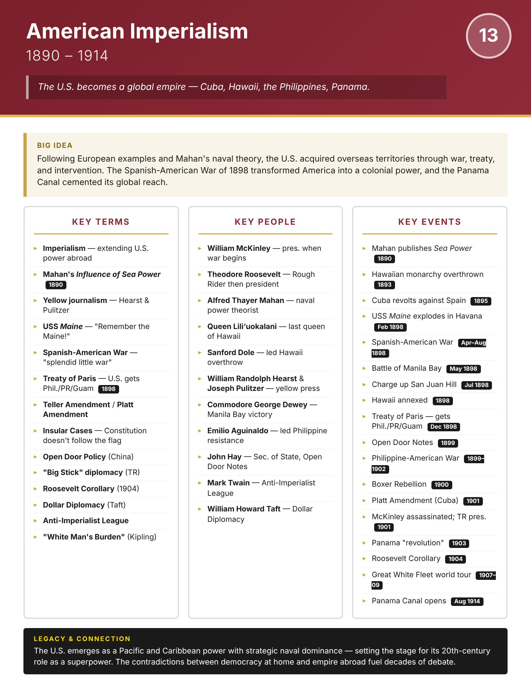

Era
Wise
AP History
AP United States History
Home
Course Sequence
Eras
Exam Prep
← Course Sequence
Era 13 of 25 · AP Period 7 · Lessons 31–32
American Imperialism
1890–1914
Open infographic full size
Print

← ERA 12
Gilded Age
ALL ERAS
Eras index
ERA 14 →
Progressive Era